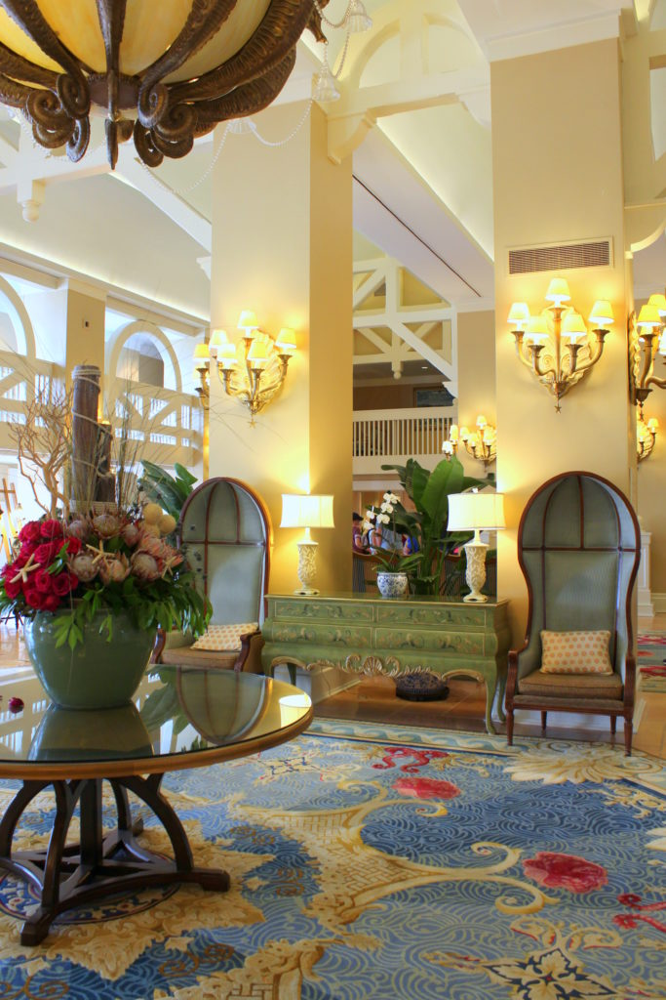

.png)
.PNG)
.PNG)
.PNG)
.PNG)
.PNG)
.JPG)
.JPG)
.PNG)
.PNG)


I’m still working on catching up blog posts with our trips from last year. So today we are finishing up our fall trip to Disney World. When we visit WDW, we always like to choose our accommodations based on the order we are visiting the parks. Because travel time is wasted time in my mind, we choose resorts that have the easiest and shortest transportation to the parks we are visiting.

Wilderness Lodge was where we chose for the first part of this trip because it was so convenient to Magic Kingdom (where we spent our first 2 days.)Â All we had to do was hop on a boat down at the dock, and in just a few minutes we were at the park.
After our time at Magic Kingdom, the next park we planned to visit was Animal Kingdom. The only resort that is close to it is Animal Kingdom Resort, but we did not really want to stay there because it is really not close to any other park.

Since we would be visiting Epcot on the day after our Animal Kingdom visit, we looked at resorts that are in close proximity to it. The hotels in the Boardwalk area are within easy walking distance of that park. So Beach Club resort was our choice for that.  With its light and cheerful colors, it was quite a contrast to Wilderness Lodge!

It is supposed to evoke a seaside resort from around the early 1900’s.
I definitely picked up on that atmosphere in this long hallway with all its wicker chairs.

And check out the cute art work!! 🙂


Here is our room. We checked out of Wilderness Lodge, drove over to Beach Club, and had a super easy EARLY check-in there (yay!)


Little beach touches with a Disney nod were all around the room.

Sorry this photo is so fuzzy. It was dark over there by the bathroom, and turning on the lights created a glare on the mirror.

After we dropped everything off, we caught the park bus to Animal Kingdom. It was cloudy, but we never encountered rain the entire day.

We had fastpasses for Kilimanjaro Safaris first thing. I have read that it is good to do the safari early in the day since the animals are more active in the morning. It was amazing how many we saw that day!


I took a lot more photos of various animals, but this post is going to be too long to show you all of them. So moving on….We rode several rides, and then went to see the always wonderful Lion King show.


Remember how I said we did not encounter rain the entire day? Well, it did actually rain. We just happened to be inside the show when it did. 🙂

We had lunch at Yak and Yeti Restaurant (reservations made months in advance.) Their Kobe beef burger was by far the best burger I have ever had in my life. When our daughter’s college roommate ate there, she had the burger as well and thought the same thing. So if you go, and you love burgers like I do, order theirs. You’ll be glad you did. 🙂

After lunch we decided to walk some of the trails in the park to burn off some of those burger calories. 🙂 There is always such lush vegetation all around Animal Kingdom.

We had a fastpass for later in the day, so we took a break and went back to our resort. (I needed a power nap at that point!) Then we returned around 5:30 that evening for our final ride…Avatar Flight of Passage.

Without a fastpass, it is usually a little more than a 2 hour wait in line for the ride, but by some miracle I was able to get a fastpass. Avatar is located in Pandora, Animal Kingdom’s all new land. All of it is modeled after the scenes and settings in the gorgeous science fiction film, Avatar…and it is a beauty to behold. Disney has truly outdone itself here.

And the Avatar ride is without a doubt the best thing that Disney has ever created in my mind. I loved loved loved Soarin’ over in Epcot, but the Avatar ride far exceeds it. I would wait the 2+hours in line without a fastpass just to ride this ride. It is that good. You sit on a bike type apparatus that simulates riding on a flying animal, and you do indeed feel as if you are flying. The scenery you view on the surrounding screen is gorgeous, and you feel the mist and wind in your face. The technology behind it is simply amazing. If you have ridden it, you will enjoy the video below. If you haven’t experienced it yet and don’t want to spoil it for yourself, don’t watch it. Just know this is only small portion of the experience. Nothing compares to the 3-D imagery, the surround sound, and the feeling of riding on a flying animal.
After Avatar, we watched the Tree of Life Awakenings, and then we took our seat to watch the beautifully relaxing Rivers of Light show. And that wrapped up our day at Animal Kingdom.
The following morning we were up early to stroll the quick walk over to Epcot. It was a gorgeous day with blue blue skies!


I love being able to go in the “back door” at Epcot – The International Gateway. If you are there when the park opens, you pretty much have that area of Epcot to yourself.

None of the shops in that area are open until around 11:00, but it is so much fun just to be able to wander through the area and enjoy the architecture and the landscaping without having to worry about crowds.

That is my idea of Disney magic. 🙂


We timed our visit so that we could be there during their annual Food and Wine festival where you can purchase small samples of assorted dishes. (My husband calls that “snacking.” 🙂 ) Canada’s filet mignon is still my favorite “snack.”

If you come in the “back door” of the park, you have to walk through all of World Showcase to reach the front of Epcot.

We rode a number of rides (including Soarin’) and snacked our way around the world. By late afternoon, we had seen and experienced most of what we wanted to in the park, so again we took a break.

And then we returned after dark to experience Illuminations, the impressive fireworks show in Epcot.

This was our final night in the parks, so we took our time leaving to walk back to the resort. Everything was even more beautiful lit up at night.

After checking out of Beach Club the next morning, we decided to spend a couple of hours shopping in Disney Springs. Lunch was at The Boathouse with its charming Amphicars (that you can actually take a ride in!)

I have admired old boats for a very long time, and vintage Chris Crafts are some of my favorites. The Boathouse even had one of them inside!

And it was available as a dining table! (Not sure I would have had the heart to cut up one of those beauties for a dining spot though.)

Our meals were excellent. I had fish tacos, and my husband had shrimp and grits.

We made one last stop in Disney Springs at Erin McKenna’s Bakery to pick up some gluten free sweets to take home. 🙂

And our wonderful trip came to a close. Thank you so much for following along with me as I have shared it here. Next up we will be looking at a truly gorgeous house and a couple of other special buildings. Hope you will be back!
Until next time…


.PNG)
I prefer Beach Club. I bet you would never have guessed that! The Chris Craft made an awesome place to eat, The Lion King is my favorite show and I LOVE fireworks! You covered it well!!
Oh how I want to go!
I have only been to Disneyland but Disneyworld is on my list!
I am turning 50 this year so the fall trip is pretty tempting!
Thank you for sharing, your adventures, descriptions and of course photos, are so enjoyable!
I’d love to plan my 50th party with you!
Thanks Kelly!
It’s been a few years since my husband & I were there. A lot has changed. I enjoyed your trip & thank you for sharing!!
This has been one of the best commentaries I have ever read about a visit to WDW. You did a fabulous job describing your visit. I have never been to Disney, so your descriptions were quite helpful. I hope to visit Epcot one day.
Thank you so much for the tour and the memories. You saw the park in the best way ever. When we went it was so crowded. I so look forward to your posts and can hardly wait for the next one. Thank you Kelly
Enjoyed back to back Disney posts!! Love seeing your photos and things you like to do when at the Magic Kingdom and WDW!! Almost as good as being there! I have been there at holidays, special events and at early morning with very few guests present— which is delightful!! Glad my parents got to visit with us when our kids were young and later! Several of my family members have been employed there through the years. Nice to be guests and forgo the entrance fee!! 🙂 It truly is the happiest place on earth— or at least one of the 🤗! We all become kids when there!! Glad you enjoyed every minute— y’ll Come back! Y’ hear?
So many new things since I was last there. I must return soon! I have tickets that are still good for one more day! I love your idea of staying close to the park you are visiting.